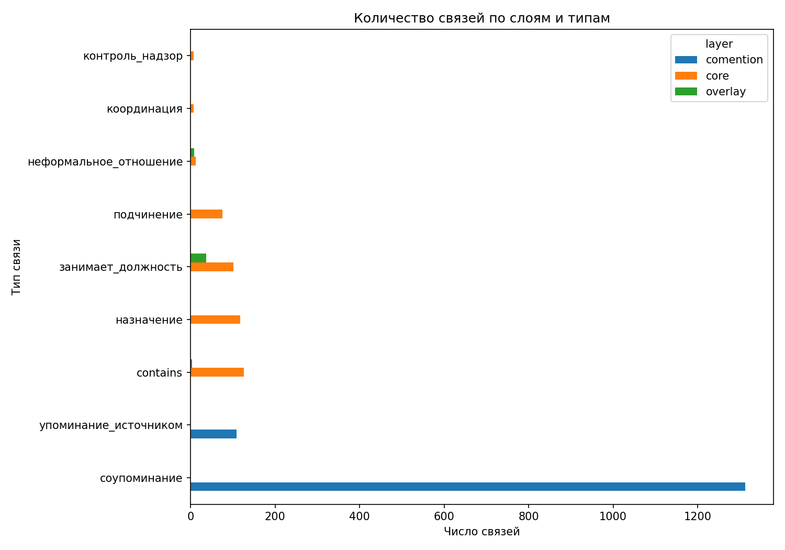

Автоматизированный сбор пока охватывает только часть институционального слоя, но уже делает проект менее зависимым от ручного ввода.
Формальные институты, кадровые связи и аналитические слои влияния
2026-06-19
<div class="eyebrow">Digital Humanities · Python · Network Analysis</div>
<h1>Сетевая модель российской власти</h1>
<p class="hero-lead">Проект сравнивает <strong>формальную архитектуру власти</strong> с <strong>многослойной сетью кадровых, координационных и аналитически реконструированных связей</strong>. Исходные Kumu-таблицы здесь превращены в воспроизводимый Python-пайплайн: данные загружаются, нормализуются, частично дополняются автоматизированным сбором с официальных сайтов, а затем анализируются и визуализируются кодом.</p>
<div class="hero-actions">
<a class="button-primary" href="https://github.com/senseytarget57/russian-power-network">GitHub-репозиторий</a>
<a class="button-secondary" href="#results">К результатам</a>
</div>
<div class="chip-row">
<span class="chip">522 узла</span>
<span class="chip">1920 связей</span>
<span class="chip">4 слоя данных</span>
<span class="chip">Python + NetworkX + Quarto</span>
</div><div class="stat-label">Исследовательский вопрос</div>
<div class="stat-text">Насколько формальная структура российской власти совпадает с сетевой структурой кадровых, координационных и аналитически реконструируемых связей?</div><div class="stat-label">Методы</div>
<div class="stat-text">Автоматизированный сбор официальных данных, сетевой анализ и сравнительный анализ многослойной сети.</div><div class="stat-label">Новизна</div>
<div class="stat-text">Проект объединяет formal core, overlay, comention и официальный snapshot в одну воспроизводимую структуру анализа.</div>Совпадает ли формальная институциональная карта российской власти с сетевой структурой кадровых назначений, координационных контуров и аналитически реконструированных связей, или же разные слои данных показывают разные логики связанности?
Проект опирается на две группы работ.
Во-первых, это исследования о неформальном управлении, патронализме и российской элите: Алена Леденёва, Генри Хейл, Владимир Гельман, Ольга Крыштановская, Оксана Гаман-Голутвина. Они задают язык для разговора о патрональных сетях, встроенных акторах, карьерных траекториях и соотношении формальных и неформальных институтов.
Во-вторых, это исследования, где SNA используется напрямую для анализа российской власти и элит:
Для моего проекта эти исследования важны в двух смыслах: они дают теоретические основания для выделения узлов и типов связей и одновременно предлагают методические ориентиры для операционализации сети власти.
<h3>official</h3>
<p>Формальный институциональный слой, который частично собирается кодом с официальных сайтов и сохраняется как воспроизводимый snapshot.</p><h3>core</h3>
<p>Основной формальный каркас исследовательской базы: институты, должности и формальные связи.</p><h3>overlay</h3>
<p>Аналитический слой, собранный по политологическим исследованиям о сетевых структурах и неформальных отношениях.</p><h3>comention</h3>
<p>Слой соупоминаний, который фиксирует дополнительную связанность акторов в источниках и расширяет сетевую плотность корпуса.</p>Изначальная версия проекта строилась на Kumu-совместимых таблицах, но
итоговый вариант переведён в Python-пайплайн. Отдельный модуль
src/scrape_official.py собирает часть формального
институционального слоя с официальных сайтов:
Для офлайн-воспроизводимости в репозитории хранится кэшированный snapshot официального слоя. Поэтому проект можно запустить и без live-доступа к сети, но логика автоматизированного сбора остаётся частью метода.
Автоматизированный сбор пока охватывает только часть институционального слоя, но уже делает проект менее зависимым от ручного ввода.
<h3>1. Автоматизированный сбор</h3>
<p>Сбор и структурирование формального институционального слоя с официальных сайтов, сохранение snapshot для воспроизводимости.</p><h3>2. Сетевой анализ</h3>
<p>Построение графа formal core и расчёт degree, betweenness и closeness centrality с помощью <code>networkx</code>.</p><h3>3. Multilayer comparison</h3>
<p>Сравнение слоёв <code>official</code>, <code>core</code>, <code>overlay</code> и <code>comention</code> по размеру, составу и типам связей.</p>
Формальный слой core задаёт ограниченный институциональный
каркас, тогда как comention значительно увеличивает сетевую
плотность за счёт соупоминаний.
<img src="../outputs/figures/top15_core_degree.png" alt="Топ-15 узлов formal core по degree centrality">
<p class="figure-note">На вершине formal core находятся президентский центр, правительство и парламентские институты.</p><img src="../outputs/figures/core_network_top40.png" alt="Подграф наиболее связанных узлов formal core">
<p class="figure-note">Подграф показывает ядро институциональной связности, но не претендует на полное описание «реального» распределения власти.</p><h4>Формальный каркас уже уже аналитической сети</h4>
<p><code>core</code> значительно менее плотен, чем <code>comention</code>, потому что фиксирует только институционально допустимые и явно размеченные связи.</p><h4>Президентский центр — главный структурный узел</h4>
<p>В formal core наибольшую центральность получает институт президента, а следом идут правительство и парламентские институты.</p><h4>Слои не совпадают друг с другом</h4>
<p>Формальная архитектура власти и аналитически реконструированная сеть описывают разные механизмы связанности и не могут быть сведены к одной плоскости.</p><h4>Автосбор усиливает воспроизводимость</h4>
<p>Даже ограниченный официальный snapshot делает институциональную часть проекта прозрачнее и лучше проверяемой.</p><h3>Ограничения</h3>
<ul>
<li>Автоматизированный сбор пока охватывает только часть формального институционального слоя.</li>
<li><code>overlay</code> и <code>comention</code> нельзя интерпретировать как fully verified-only данные.</li>
<li>Сетевые метрики чувствительны к тому, какие типы рёбер включены в formal core.</li>
</ul><h3>Перспективы развития</h3>
<ul>
<li>Расширить автоматизированный сбор официальных данных.</li>
<li>Добавить исторические срезы и динамику сети по годам.</li>
<li>Углубить аналитический слой за счёт более строгой разметки кадровых и неформальных связей.</li>
</ul>Проект опубликован в отдельном GitHub-репозитории и состоит из Jupyter-ноутбуков, Python-модулей, сырых и обработанных данных, а также статического отчёта Quarto. Это позволяет рассматривать его не как разовую визуализацию, а как небольшой воспроизводимый исследовательский pipeline.
pip install -r requirements.txt
python scripts/run_analysis.py
quarto render report/index.qmdПроект показывает, что даже данные, первоначально подготовленные под Kumu, можно превратить в аккуратный и воспроизводимый Python-пайплайн. В таком виде результат лучше соответствует формату итогового DH-проекта: у него есть исследовательский вопрос, корпус данных, связь с предыдущими исследованиями, явная методика, воспроизводимый код и визуально считываемые результаты.